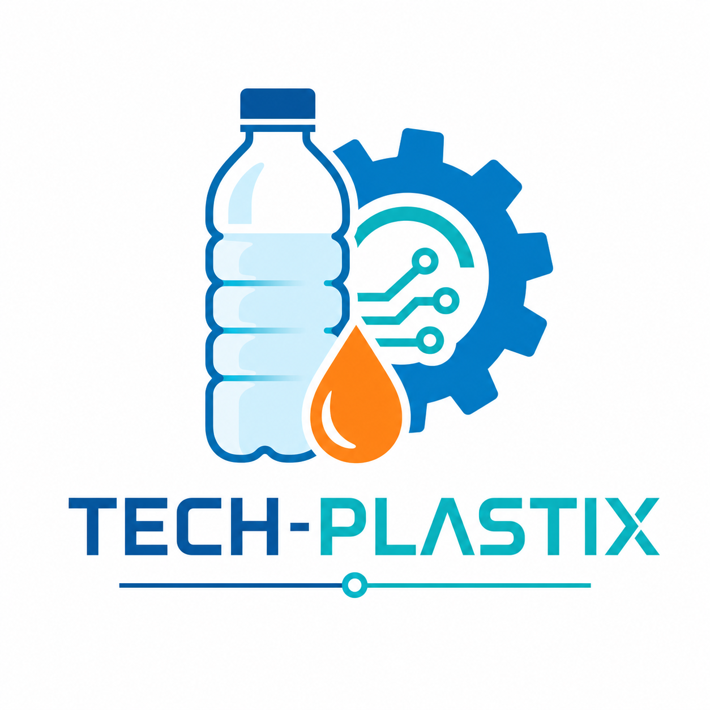

🧪 TECH-PLASTIX – Kunststoffe Technik
Einstieg in das Thema Kunststoffe – Klasse 6, Technik
🎯 Kurzbeschreibung
Diese Unterrichtseinheit ist ein 20-minütiger Einstieg in das Thema Kunststoffe im Fach Technik, Klasse 6, an der Gemeinschaftsschule in Baden-Württemberg.
Sie orientiert sich am Bildungsplan 2016 Sekundarstufe I und vermittelt grundlegende Werkstoffe, ihre Eigenschaften und Technikfolgen.
Im Mittelpunkt stehen drei zentrale Fragen:
- Was ist Kunststoff?
- Wie entsteht Kunststoff grob „vom Erdöl zum Produkt"?
- Welche Chancen und Probleme bringt der Einsatz von Kunststoffen mit sich?
🧩 Lernziele (Kompetenzen)
Die Schülerinnen und Schüler können nach dieser Einheit:
In eigenen Worten erklären, was Kunststoff ist, und mindestens zwei Alltagsbeispiele benennen.
Den groben Weg „Erdöl → Raffinerie → Kunststoffgranulat → Produkt" in einer einfachen Skizze darstellen.
Mindestens eine vorteilhafte und eine problematische Eigenschaft von Kunststoffen nennen.
🧬 Was ist Kunststoff?
Schülergerechte Erklärung
- Kunststoff ist ein künstlich hergestellter Stoff, der meistens aus Erdöl gemacht wird.
- Aus dem Erdöl gewinnt man kleine Bausteine, aus denen in der Chemie lange Ketten (Polymere) entstehen.
- Diese Kunststoffe kann man leicht formen, einfärben und für sehr viele Produkte nutzen: z. B. Flaschen, Tüten, Spielzeug, Gehäuse, Folien.
🛢️ Vom Erdöl zum Kunststoff
Vereinfachte Prozesskette
Ablauf im Detail:
- Erdöl wird in Raffinerien in verschiedene Bestandteile getrennt.
- Aus geeigneten Bestandteilen werden durch chemische Reaktionen große Moleküle (Polymere) aufgebaut – das sind die „Bausteine" der Kunststoffe.
- Das Ergebnis ist oft Kunststoffgranulat, das eingeschmolzen und zu Produkten geformt wird.
🕒 Verlaufsplan – 20 Minuten
🎓 Differenzierung
- Satzanfänge an der Tafel (z. B. „Kunststoff ist …", „Er wird hergestellt aus …")
- Vorgezeichnete Prozesskette zum Ergänzen (Lückenschema)
- Zusatzfrage: „Warum kann es ein Problem sein, dass Kunststoffe so lange haltbar sind?"
- Transfer: SuS nennen Ideen, wie man Kunststoffe im Alltag einsparen kann
📚 Materialien
Für die Lehrkraft:
- Kiste mit typischen Kunststoff-Gegenständen (Flasche, Brotdose, Spielzeug, Verpackung etc.)
- Tafel/Whiteboard oder digitale Tafel
- ggf. 1–2 Folien/Slides mit der Prozesskette „Erdöl → Kunststoff"
Für die SuS:
- Heft oder Arbeitsblatt
- Stifte (für Skizze und Stichworte)
📺 Kurze Erklärvideos (empfohlen)
Diese Videos eignen sich als kurze Impulse oder für die Vertiefung (z. B. Hausaufgabe, zweiter Stundenteil).
-
1. Checker Tobi – Der Plastik-Check
Reportage für Kinder: Wie entsteht Plastik? Welche Probleme macht es in der Umwelt?
Video ansehen -
2. ZDF goes Schule – „Alles aus Plastik?!"
Sehr kurzer Überblick über Geschichte, Vorteile und Probleme von Plastik
Video ansehen -
3. WDR Planet Wissen – „Was ist Plastik?"
Grundlagen zu Kunststoffen und ihren Eigenschaften, mit Alltagsbeispielen
Video ansehen -
4. Petrochemie: Wie aus Rohöl Kunststoff wird
Kurzer Einblick in die Umwandlung von Rohöl zu Kunststoffen
Video ansehen -
5. Is Plastic Fantastic? – Die Wahrheit über Kunststoff
Zeigt Chancen und Risiken des Kunststoffgebrauchs in moderner Gestaltung
Video ansehen
🌱 Ausblick auf weitere Stunden
Folgende Themen können in den nächsten Stunden vertieft werden:
- Eigenschaften von Kunststoffen (Dichte, Festigkeit, Verformbarkeit, Temperaturverhalten)
- Kunststoffe und Umwelt (Plastikmüll, Mikroplastik, Recycling)
- Werkstoffvergleich (Kunststoff vs. Holz vs. Metall für ein konkretes Produkt)